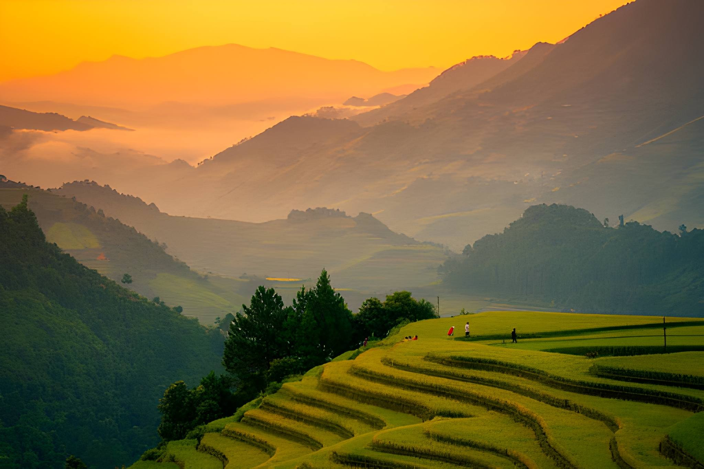

Northern Vietnam is a remarkable destination for nature lovers, offering dramatic mountain ranges, peaceful lakes, green valleys, limestone landscapes and spectacular waterfalls. From exploring remote highland roads to discovering quiet countryside villages, the region provides plenty of opportunities to enjoy the outdoors.
Whether you prefer cycling through rural landscapes, hiking along mountain trails or taking a relaxing boat ride across a lake, Northern Vietnam has natural attractions for different types of travellers. Its scenery is closely connected to local traditions, welcoming communities and a way of life that changes with the seasons.
Travellers planning a wider holiday can also explore the available Vietnam travel options while researching the country's different regions.
Must-Visit Natural Attractions in Northern Vietnam
1. Ha Giang – Explore Dramatic Mountain Landscapes
Ha Giang is known for its impressive limestone mountains, deep valleys and winding roads. The Dong Van Karst Plateau Geopark is one of the region's most remarkable landscapes, offering views of rugged mountain formations and traditional villages.
Ma Pi Leng Pass is a highlight for scenic drives and photography, with dramatic views over the Nho Que River. Visitors can also explore remote communities and learn about the traditions of ethnic minority groups living in the surrounding highlands.
2. Ba Be National Park – Discover Peaceful Lakes and Forests
Ba Be National Park is a peaceful natural retreat centred around Ba Be Lake, a freshwater lake surrounded by forested hills and limestone mountains. It is an excellent destination for travellers who enjoy quiet landscapes and outdoor exploration.
Visitors can take boat trips across the lake, explore nearby caves and follow walking trails through the surrounding forest. Staying in a traditional homestay in a local Tay village also offers an opportunity to experience the area's culture and everyday life.
3. Pu Luong Nature Reserve – Experience Beautiful Rice Terraces
Pu Luong Nature Reserve is famous for its terraced rice fields, forested hillsides and small villages spread across green valleys. Its peaceful countryside makes it a wonderful place to slow down and enjoy Northern Vietnam's rural scenery.
Travellers can walk along village paths, see traditional stilt houses and observe the wooden waterwheels used in local farming. Hiking routes around Hieu Waterfall provide another way to explore the reserve's natural beauty.
4. Sapa – Enjoy Mountain Views and Scenic Trekking
Sapa is one of Northern Vietnam's best-known mountain destinations, attracting visitors with its terraced rice fields, misty hills and traditional villages. The Muong Hoa Valley is particularly popular for trekking, offering scenic routes through farmland and local communities.
The surrounding Hoang Lien Son mountain range creates a dramatic backdrop for outdoor activities. Visitors can also explore Fansipan, the region's highest mountain, either by taking on a challenging trek or using the cable car for panoramic views from the summit area.
5. Ninh Binh – Discover Limestone Mountains and Rivers
Ninh Binh is celebrated for its limestone cliffs, green rice fields and winding waterways. The landscape is often explored by boat, making it a relaxing destination for visitors who want to experience Vietnam's natural scenery at a slower pace.
A boat trip through Trang An or Tam Coc reveals caves, river passages and towering limestone formations. For a wider view of the surrounding countryside, climb to the Mua Cave viewpoint. The area's quiet rural roads are also ideal for cycling.
6. Cao Bang – Witness the Beauty of Ban Gioc Waterfall
Cao Bang is an excellent choice for travellers interested in remote mountain landscapes and impressive natural attractions. Its most famous highlight is Ban Gioc Waterfall, where water flows over a series of limestone formations near the Vietnam–China border.
Nearby Nguom Ngao Cave features impressive stalactites and stalagmites, while Thang Hen Lake offers a peaceful setting surrounded by green hills. Together, these attractions make Cao Bang a rewarding destination for nature photography and outdoor exploration.
7. Ha Long Bay and Cat Ba Island – Enjoy Coastal Natural Beauty
Ha Long Bay is famous for its emerald waters and thousands of limestone islands rising dramatically from the sea. Boat trips and kayaking excursions allow visitors to appreciate the bay's distinctive coastal scenery and explore some of its quieter areas.
Nearby Cat Ba Island offers a different natural experience, with forested landscapes, caves, coastal viewpoints and hiking routes. Cat Ba National Park is particularly appealing to travellers who want to combine outdoor activities with coastal exploration.
8. Mai Chau – Experience the Charm of the Countryside
Mai Chau is a relaxing countryside destination surrounded by rice fields, rounded hills and traditional stilt houses. Its peaceful valleys provide a welcome contrast to the busier cities and popular tourist centres.
Visitors can cycle through villages, walk along quiet country lanes and enjoy views of the surrounding farmland. Staying with a local family is a meaningful way to discover regional food, traditional customs and everyday life in the valley.
Best Time to Explore Northern Vietnam
September to November and March to April are generally among the most comfortable periods to explore many parts of Northern Vietnam. These months often offer favourable conditions for trekking, sightseeing and enjoying the region's mountains, valleys and countryside.
Seasonal scenery varies across the region. Autumn can bring beautiful colours to rice-growing areas, while spring often offers pleasant conditions for outdoor exploration. Summer brings greener landscapes and fuller waterfalls, but heavier rainfall can affect trekking routes and mountain journeys.
Winter can be cold in the northern highlands, particularly around Sapa and other elevated areas. Mist and low temperatures may also affect visibility. Since weather conditions differ between destinations and altitudes, check local forecasts before travelling and pack suitable clothing.
Travel Tips for Nature Lovers Visiting Northern Vietnam
- Wear comfortable walking shoes with good grip for trekking and uneven paths.
- Check weather forecasts before visiting waterfalls or planning mountain activities.
- Dress in layers, especially when travelling through high-altitude areas.
- Respect village customs, local traditions and community guidelines.
- Avoid littering and do not disturb wildlife or natural habitats.
- Allow extra travel time when navigating winding mountain roads.
- Carry drinking water, sunscreen, insect repellent and essential personal supplies.
Why Should Nature Lovers Visit Northern Vietnam?
Northern Vietnam brings together an impressive variety of natural landscapes, from rugged mountain passes and forested lakes to limestone valleys, rice terraces and coastal islands. Travellers can experience these surroundings through trekking, cycling, boating and photography.
The region also offers opportunities to connect with local communities and learn about traditional ways of life. Village visits, homestays and regional food experiences add a cultural dimension to time spent exploring the outdoors.
Whether you are looking for challenging mountain routes or peaceful countryside escapes, Northern Vietnam offers plenty of ways to experience nature beyond the country's major cities.
Conclusion
Northern Vietnam combines spectacular scenery with rewarding outdoor experiences. From the dramatic mountain roads of Ha Giang to the quiet waters of Ba Be Lake and the impressive cascades of Ban Gioc Waterfall, each destination reveals a different side of the region.
With thoughtful planning, travellers can enjoy the area's natural attractions while discovering its local cultures and rural communities. Exploring the best places to visit in Northern Vietnam can make for a memorable journey filled with mountain views, peaceful landscapes and outdoor adventures.